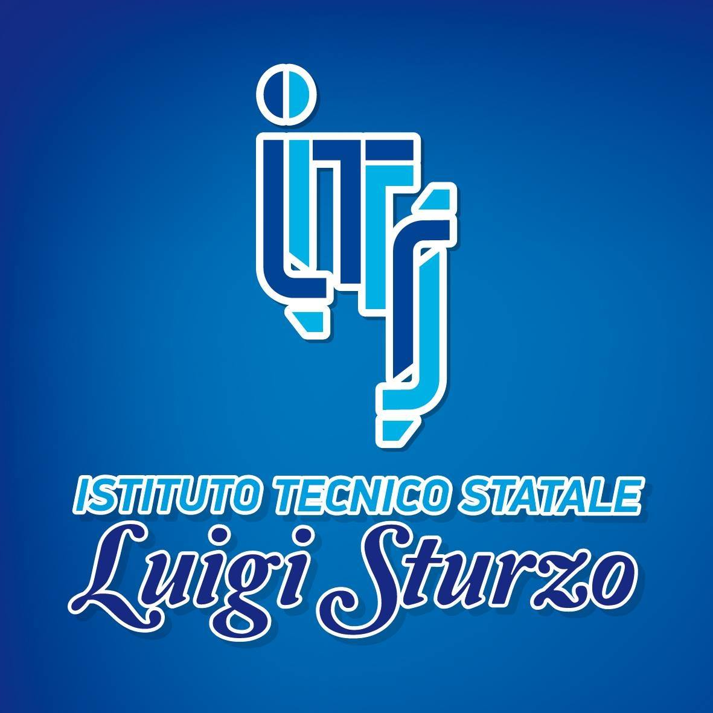
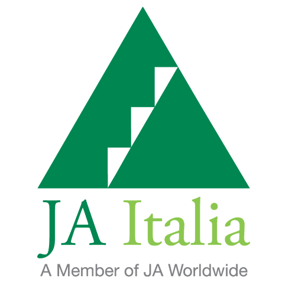

Experience
-
HPC Research and Software Development Intern
HPSC Smart Lab @ University of Naples Parthenope - Naples, Italy
September 2023 - January 2024
- Contributed to the GVirtuS project, a GPGPU virtualization service for HPC, edge, and cloud computing environments.
- Developed a novel RDMA and Infiniband-based communicator, improving virtualized application performance by up to 50%.
- Enhanced code maintainability by implementing bug fixes and refactoring.
- Deployed and tested middleware on HPC infrastructure.
- Authored a paper based on this work, discussed at PPAM 2024 international conference.
Education
-
 Master of Science in Computer Science, focus on Cybersecurity
Master of Science in Computer Science, focus on Cybersecurity
University of Salerno - Salerno, Italy
September 2024 - Present
- Studies on Cybersecurity, Information Security, Cryptography, Secure Programming, Penetration Testing and Ethical Hacking, Digital Forensics, IoT Security.
-
 Bachelor of Science in Computer Science
Bachelor of Science in Computer Science
University of Naples Parthenope - Naples, Italy
September 2019 - July 2024
- Final grade of 104/110.
- Thesis titled "GPGPU virtualization: design, development and evaluation of HPC, IoT and edge computing middleware".
- Studies on Computer Architectures, Procedural and Object Oriented Programming, Algorithms and Data Structures, Databases, Scientific Computing, Operating Systems, Software Engineering and Human-Computer Interaction, Networking, Parallel and Distributed Computing, Image Processing, Calculus, Physics.
-

High School Diploma in Business Administration
Technical Institute Luigi Sturzo - Castellammare di Stabia, Italy
September 2014 - July 2019
- Final grade of 100/100.
- Studies on Business Management, Financial Accounting, Micro and Macroeconomics, Laws.
Other Formative Activities
-
 iOS Foundation Program: iOS Essentials
iOS Foundation Program: iOS Essentials
University of Naples Parthenope - Naples, Italy
September 2023 - November 2023
- Designed and developed an iOS app prototype in Swift to assist Alzheimer's patients in practicing reminiscence therapy.
-
Parthenope Game Jam 2023
University of Naples Parthenope - Naples, Italy
September 2023
- Developed a video game in Unity using C# within 72 hours, based on the theme 'equilibrium', and received the 'Relevance to the Theme' award.
-

JA Italia: Impresa in Azione
Technical Institute Luigi Sturzo - Castellammare di Stabia, Italy
October 2017 - May 2018
- Founded a micro-production company to participate in a regional teen competition, specializing in the production of bags equipped with internal LED lighting to improve visibility when searching for items.
Projects and Contributions
-
GVirtuS: GPGPU Virtualization Service
September 2023 - present
- Contributed to GVirtuS, a GPGPU virtualization component designed for High-Performance Computing (HPC) cloud environments.
- Boosted virtualization performance by up to 50% through the creation of a novel Network Communicator in C++, leveraging RDMA and Infiniband technologies via the rdma-cm and ibverbs libraries.
- Enhanced code maintainability by refactoring existing code and resolving bugs.
- Delivered additional minor feature improvements.
- Technologies: C, C++, Infiniband, RDMA, TCP/IP, CUDA, Slurm, git, Linux.
View Project on GitHub!
Conferences
-
"Boosting GPGPU virtualization and multiplexing with RDMA communication"
15th International Conference on Parallel Processing & Applied Mathematics (PPAM 2024) - Ostrava, Czech Republic
8-11 September 2024